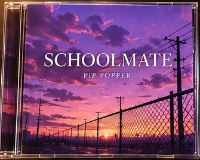

SCHOOLMATE
Hの2枚目のソロ作品
一人で思ったことを歌詞にし、独り言のように曲にしていた頃の作品。仲間と歌っていないこともあって、現在はそれほど頻繁に聴き返さない。それでも、今の技術で作り直せば、また違う魅力が生まれるかもしれない。
収録曲（全7曲）
- Go to the school
- Chimpanzee
- Okuru Kotoba（feat. T）
- Ohitoyoshi
- Leisured Persons
- Men of the World
- Sex Friend - DJ Masterkey Remix -